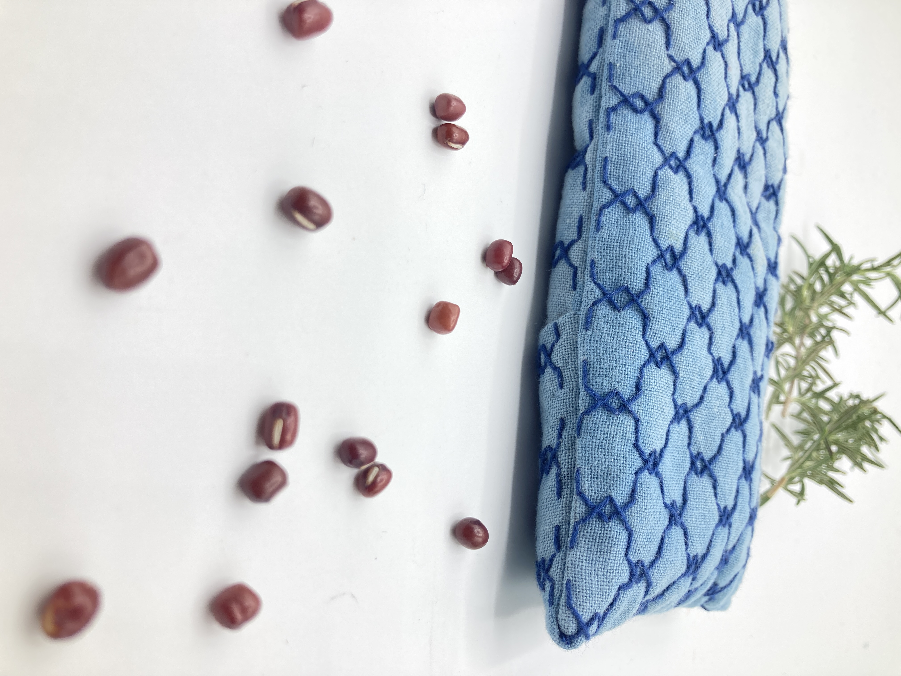

Concept
深い藍色に、青い刺し子糸が、目にも心にも優しい時間を運んでくれます。

今回の限定キットは生の藍染め生地の袋に北海道産小豆を20％増量の180g！と、たっぷりと詰め込んで特製の針と糸を同梱した特別な刺し子カイロキットです。（通常はシーチング生地に150gの小豆のコンビ）

さらに、癒やしのローズマリーも長めに入れました🌿
温めるとほのかに漂うハーブの香りが、あなたを包み込みます。
Features
「でも、私に作れるかな…？」
大丈夫です！
実は、刺し子の超初心者である私、刺し子どり亭主もひとりで作ることが出来ました。
刺し子どりに、「初心者が絶対に失敗しないキットにして！」って、わがまま言い放題で作ってもらいました。
※写真はイメージです（七宝つなぎの刺し方図は入ってません）
（昨年のお客様の声）
と喜びの声をたくさんいただきました。
今年も私と一緒に、チクチク手仕事しませんか？
Kit Contents
【20個限定カスタムキット】
お届けする中身
- ※藍染め晒
（方眼下図・フリクションペン描き済み）：1枚 - ※裏地用 白晒：1枚
- 内袋用 白晒：1枚
- ※小豆：180g
（通常品より20％増量） - ローズマリー（ハーブ）
- ※刺し子どり選定
長針（和針）：1本 - ※刺し子どり選定
刺し子糸（藍染めに映える色） - 仕様書・説明書
（動画QRコード・パスワード付）
※は、限定セットだけの同梱品です。
草木染めは自然素材を使った手染めのため、以下の点をご理解ください。
- 一点ごとに色合いやムラが異なります
- 光や時間とともに少しずつ色が変化します
世界に一つだけの風合いとして、お迎えいただければ嬉しいです☺️
お客様にご用意いただくもの
- 布用ハサミ
- 糸切りバサミ
- アイロンとアイロン台
- まち針
- 内袋用手縫い糸（白など）
その他、必要に応じてご準備ください。
Pattern
今回の限定キットは、
こちらの伝統柄をお作りいただけます。
一目干網（ひとめほしあみ）
網のような幾何学模様が美しい、
縁起の良い伝統的な柄です。
藍染め生地で作る
“刺し子どり小豆カイロ” キット
¥3,000 (税込)
★日本全国 送料込み
今回は直接注文のみとなります（メルカリ販売の予定はございません。クリックポストにてお届けします）
ご注文の流れ（DMのみ）
1 下記ボタンよりInstagramを開いてください。
2 メッセージ（DM）で下記３点をお知らせください。
1. お名前（本名）
2. 郵便番号・ご住所
3. 電話番号
3 振込先口座をご案内しますので、ご入金ください。
※恐れ入りますが手数料のご負担をお願いいたします。
4 ご入金確認後、３日以内に発送する予定ですが、ご注文多数の場合は遅れる場合がございます。あらかじめご了承ください。
How to Order
今回は【限定20セット】のため、
すぐに売り切れてしまうかもしれません。
ご希望の方は、
Instagramのメッセージ（ＤＭ）
にてお申込みください。
材料が揃って、動画サポートもついた安心キット。
ぜひ、ご自身の手で作ってみませんか
キットを注文する